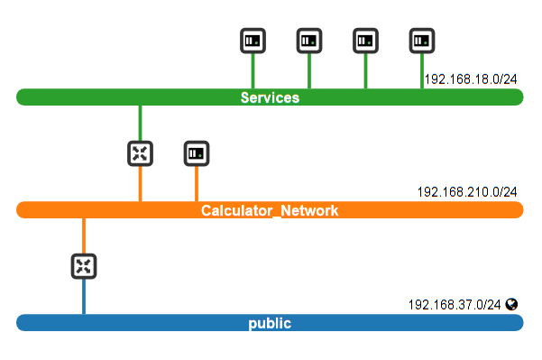

Descriptive part
The Middleware & Services course is composed of three modules in which we study
the main IoT technologies used nowadays.
The first module concerns the Middleware for IoT in which I discovered the OM2M platform, how to deploy an OM2M architecture and how to cretae requests. Furthermore,
it allows us to understand the interoperability need between technologies, types of sensors and applications,
which is important in the IoT world.
The second module, is about the deployment of a service oriented architecture,
we learnt how to develop Web Services and resources.
The third module is about Cloud Computing, the management of virtualization and how to deploy virtual machines
within networks.
In this page you will find all the information about the different modules and the practical work and projects realized.
I detail the tasks performed, for what purpose.
I also highlight the knowledge and skills acquired during each module.
IoT Middleware and M2M
In the IoT middleware course, I took an autonomous training course on handling the oneM2M standard as well as its
deployment for an architecture of connected objects. With oneM2M, we will be able to have a homogeneous vision of
the system, regardless of the field of application. For example, it is possible to manage the equipment of a
connected room.
The architecture proposed by the standard will make it possible to model the system by different entities:
- At the service layer level is represented by Common Services Entities (CSE).
These entities will allow applications to register in their system and will provide the different services related to
the standard: these are the basic resources;
- At the level of the application layer we will find the AE (Application Entities) which correspond to the different
applications connected to the system (assimilated to child resources vis-à-vis the CSE).
I created different AE to simulate for example light or temperature sensors;
- CNT (Containers) which make it possible to structure data and resources (data container...);
- the CIN (Content Instances) which are the resources for storing the values in the platform.
During the four labs, I was able to discover different standards such as MQTT and open-source platforms
such as OM2M and mangOH which each have their own particularities. For example in the third lab,
I deployed an architecture using the oneM2M standard to create sensors (electricity, brightness and temperature)
for which I could monitor changes in values for each of them. The diagram of the architecture is given on the right.
Service Oriented Architecture
The main project of this module was the project which brought together the knowledge in both the SOA and Middleware (OM2M) courses.
We were requested to develop a Web application (Proof-of-Concept) for managing INSA’s rooms.
Our application allows automatic closing windows, doors or switching lights, for instance. So, this application relies on software services, sensors, and actuators. The goal is to retrieve data from sensors and analyse them to enable taking decisions. Through software services (Restful Web services), we retrieved data of sensors (temperature, light...), and according to the values of the retrieved data, we triggered actuators. Our application was based on a Restful architecture.
Thanks to Jira, we can develop user stories to be able to write test scenarios afterwards.
Regarding the room environment, we chose to implement windows, doors, lamps, and an alarm as actuators. Moreover, we added temperature, light, and presence sensors.
For each device, we associated a Java service, which would do key operations: get the device values or states periodically.
Then, we a main controller in order to be able to link the different services implemented and then carry out the necessary processing according to
the selected scenarios. If I take an example, when we get the current temperature value of the room we can open the windows if it’s too hot in the room.
Nevertheless, we could not use real sensors or actuators but thanks to the OM2M platform we are able to simulate them, by creating Application Entities
and Content Instances for the values.
In addition, I developed a simple dashboard to be able to visualize all the information of the sensors
of the part as well as the state of the actuators. Below you can find an overview of the user interface.

Cloud and Autonomic Management
The general purpose of the Cloud and Autonomic management course was to enhance our knowledge of concepts and technologies for virtualization techniques.
These techniques are used in environments that support the provisioning of novel software systems considering constraints like security.
Thanks to the labs, we are led to discover and test the basic functionalities that cloud service providers could offer to end-users at the infrastructure level.
First of all, we are led to recognize the differences between the types of hypervisors' architecture and the two main types of virtualisation hosts :
virtual machines (VM) and containers (CT). We study their functioning and their connectivity through the internet (Bridge, NAT).
Furthermore, we discovered the Openstack platform to create and manage virtual machines. Openstack also allows Network virtualization.
Technical part
IoT Middleware and M2M
Through the different labs, I was able to understand different challenges.
Indeed, in the first lab, the challenge was to become familiar with the source code to generate a light detection application
implementing the MQTT protocol that is then loaded on an Arduino board. The idea was to test the publishers/subscribers concept
with a broker who played the role of interface for managing exchanged communications.
In the second lab, I became familiar with the Octave platform to manage the resources/sensors ofa MangOH yellow
development board. The challenge was to appropriate the platform so that a small application could be made in
a minimum of time to determine the air quality by knowing the amount of CO2 present in the room.
The difficulty was getting familiar with the JavaScript language that I had not used before.
Then in the third lab, I put into practice the knowledge acquired on the OM2M architecture to develop an
architecture for which an entity listened to the value changes of three sensors.
The challenge was to set up many REST queries to create the system and manage subscriptions.
Finally, in the latest lab, the main challenge was to put into practice the achievements of previous labs
to design an high level application and a concrete architecture with real devices,
using Node-RED to accelerate development.
Below is the final report of the sessions.
Service Oriented Architecture
The Service Oriented Architecture module was very interesting and allowed me to discover the different standards
and technologies for the creation and management of web services. The standards and architectures covered were:
¤ SOAP (Simple Object Access Protocol): is a structured information exchange protocol in the implementation of web
services built on XML. We sometimes encountered compatibility problems with recent Eclipse versions and so it was
difficult to run our web services on the Tomcat server, for instance.
¤ BPEL (Business Process Execution Language): is an XML representation often used as part of the implementation of
a SOA in enterprise. Concretely, in this SOA architecture, the company’s applications are brought together in a
common base to foster dialogue between applications and consolidate the existing. BPEL organizes the communication
exchanges between the different applications of the SOA architecture.
This representation was approached without having realized a concrete case of use.
¤ REST (Representation State Transfer): is a useful architecture to create APIs and Web services.
Indeed, we can easily generate HTTP requests to manage Web services. A REST server simply provides access
to resources and REST client accesses the resources. To illustrate it, we used Jersey is an open-source
framework written in Java language to develop web services according to the REST architecture. One challenge
was to understand how Jersey client API enable the interoperability of RESTful web services.
¤ Spring Boot: it’s a framework that allows you to quickly start developing applications or services by providing
the necessary dependencies and auto-configuring them. During some tutorials, we used it and also for the project explained in the Technical part.
From my point of view, this framework was very useful when I need to create several Web projects that
I had to linked between them due to the dependencies on some services.
Then regarding the SOA project (automatic management of INSA rooms), I was able to face different difficulties
during the software development of the project. Indeed, one challenge I had to succeed was to be able to interact
with the OM2M platform in which I had inserted EAs corresponding to the different sensors of the room.
Indeed, I had to be able to make HTTP POST requests in Java within the central service that managed the call to
the different sub-services (light sensors...).
Then I started to develop a web interface in order to visualize the real-time value of the sensors and
the current state of the actuators (windows, alarm...). I have developed HTML pages and JavaScript scripts
(you can find the example of the interface in the "descriptive part").
This allowed me to reinforce my learning in web development.
Cloud and Autonomic Management
During the lab sessions, we used VirtualBox in order to create Linux virtual machines.
Then we implemented containers with Docker software within a Linux VM.
Finally, we discovered the Openstack software environment for the realization of virtual machines and networks.
¤ VirtualBox: We started by create Virtual Machines to configure and test their accessibility to the Internet.
We thus experimented the NAT mode which the VM is connected to a private IP network, and uses a virtual router,
managed by the hypervisor, running on the host machine to communicate outside of the network.
We also deployed the port forwarding technique because our VM was not accessible from the outside.
We test the connectivity using a SSH client.
¤ Docker: We create containers into a VM.
We analysed the main operations on containers, the creation of images and snapshots.
We understood the main advantage of containers: their high scalability allows to deploy
several applications that run over multiple servers with a single OS.
¤ Openstack: It is an open source cloud computing infrastructure belonging ti bare-metal architecture
(also called Type 1 Architecture). On Openstack you can run VMs directly on the hardware,
and you can administrate easily with the Openstack web interface.
We can manage hardware resources between different operating systems.
Openstack also allows for Network virtualization.
This concept was very interesting and complex.
We had to make the differences between virtual and physical networks.
We implement a network with 3 sub-networks (which 2 private sub-networks) linked with virtual gateways.
The objective was to implement the main service CalculatorService (for which micro-services dpendencies were spread over different VMs located on a private network)
and to execute it from a public network.
For that, we need to link the sub-networks with a virtual router and add a specific route of the routing table.
The network topology is given below.

Analytical part
Through the different modules, I have the chance to develop some skills in computer and network services,
that a that are not predominant for people who have followed the electronic automatic field like me.
Regarding the “Service Oriented Architecture” skillset, I feel that I have acquired
ood basis for managing web services using the SOAP standard and REST architecture.
All this using the Java language which is the most optimal given the multitude of libraries, frameworks available
for web projects.
Thanks to the large project explained earlier, I was able to put project management into practice again
using adapted tools (Jira). In addition, my major investment in was beneficial to the success of the
project’s objectives. I was able to develop my knowledge in the development of web interfaces
(combining HTML and JavaScript), since I created the project dashboard.
Thanks to the “Middleware for the IoT”, I was able to familiarize myself with the most used protocols
in the IoT as well as the oneM2M standard and the OM2M platform.
Regarding OM2M, I was able to master its management thanks to HTTP requests in particular to add entities
such as sensors, actuators and to be able to retrieve instances of data from them.
This was particularly useful for the SOA project in which I decided to fill the platform (with HTTP POST requests)
of the sensors whose behavior we had defined during the implementation of services on Eclipse in Java.
The “Cloud and Autonomic Computer” module was not easy to follow at first because I had no practice in
virtualization or container management. Throughout the sessions I was able to take ownership of virtualization
techniques and understand the issues and thus develop basic skills in this area.